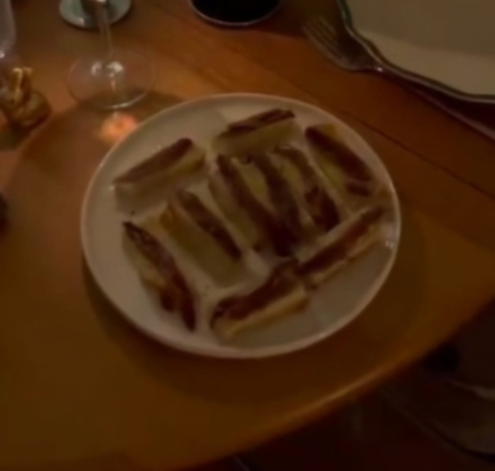

Starters
Anchovies on a toast

1x Anchovies can
10-15 grams of salted butter
Milk bread
Steps
Melt the butter in a pan;
Cut the bread in rectangles (the length of a finger) and without the crust;
Toast the bread in the butter, rotate with frequency for even toasting;
Place the anchovies on the bread, add some pepper for extra punch;
Enjoy!
Next page Previous page